a slanted mountain bicycle on the road in front of a building
→ a slanted [rusty] mountain bicycle on the road in front of a building
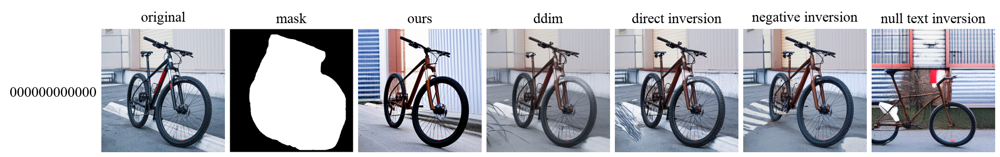
| 지표 ↓ / 모델 → | Ours | w/ DDIM | w/ Direct Inversion | w/ Negative Inversion | w/ Null-text Inversion |
|---|---|---|---|---|---|
| Structure Distance ↑ | 0.8848 | 0.9174 | 0.9283 | 0.9315 | 0.7311 |
| Background Preservation (PSNR ↑) | 18.9919 | 25.4159 | 26.3907 | 24.7879 | 17.8723 |
| Background Preservation (SSIM ↑) | 0.7657 | 0.8917 | 0.9065 | 0.8971 | 0.7329 |
| Background Preservation (LPIPS ↓) | 0.1375 | 0.0642 | 0.0459 | 0.0361 | 0.1895 |
a [round] cake with orange frosting on a wooden plate
→ a [square] cake with orange frosting on a wooden plate
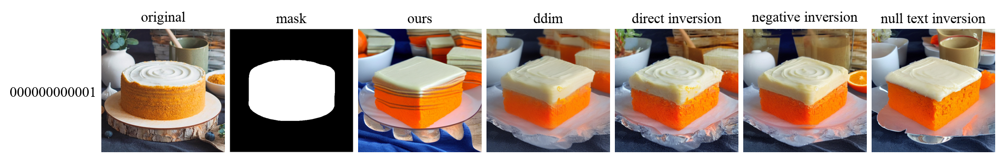
| 지표 ↓ / 모델 → | Ours | w/ DDIM | w/ Direct Inversion | w/ Negative Inversion | w/ Null-text Inversion |
|---|---|---|---|---|---|
| Structure Distance ↑ | 0.4806 | 0.5798 | 0.7287 | 0.7364 | 0.6267 |
| Background Preservation (PSNR ↑) | 14.3070 | 15.0653 | 15.7423 | 15.6359 | 15.0857 |
| Background Preservation (SSIM ↑) | 0.6293 | 0.6463 | 0.6789 | 0.6890 | 0.6568 |
| Background Preservation (LPIPS ↓) | 0.3154 | 0.3267 | 0.2721 | 0.2784 | 0.3062 |
a [cat] sitting on a wooden chair
→ a [dog] sitting on a wooden chair
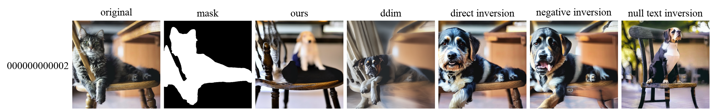
| 지표 ↓ / 모델 → | Ours | w/ DDIM | w/ Direct Inversion | w/ Negative Inversion | w/ Null-text Inversion |
|---|---|---|---|---|---|
| Structure Distance ↑ | 0.5209 | 0.4872 | 0.5286 | 0.5478 | 0.4012 |
| Background Preservation (PSNR ↑) | 16.6673 | 20.7784 | 19.9351 | 19.4430 | 15.6824 |
| Background Preservation (SSIM ↑) | 0.7738 | 0.8302 | 0.8562 | 0.8236 | 0.7485 |
| Background Preservation (LPIPS ↓) | 0.2015 | 0.1649 | 0.1469 | 0.1872 | 0.2648 |
blue light, a black and white [cat] is playing with a flower
→ blue light, a black and white [dog] is playing with a flower
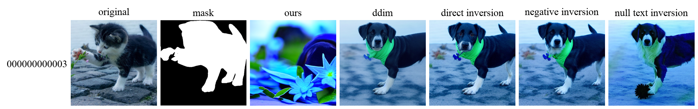
| 지표 ↓ / 모델 → | Ours | w/ DDIM | w/ Direct Inversion | w/ Negative Inversion | w/ Null-text Inversion |
|---|---|---|---|---|---|
| Structure Distance ↑ | 0.3220 | 0.4291 | 0.4734 | 0.4879 | 0.4291 |
| Background Preservation (PSNR ↑) | 13.8271 | 18.7886 | 18.9985 | 18.8630 | 15.9318 |
| Background Preservation (SSIM ↑) | 0.6995 | 0.7791 | 0.8082 | 0.8030 | 0.7665 |
| Background Preservation (LPIPS ↓) | 0.2873 | 0.1691 | 0.1190 | 0.1197 | 0.1914 |
a cat sitting next to a mirror
→ a [silver] cat [sculpture] sitting next to a mirror
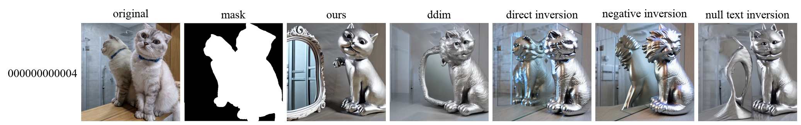
| 지표 ↓ / 모델 → | Ours | w/ DDIM | w/ Direct Inversion | w/ Negative Inversion | w/ Null-text Inversion |
|---|---|---|---|---|---|
| Structure Distance ↑ | 0.4334 | 0.4696 | 0.4099 | 0.3947 | 0.4948 |
| Background Preservation (PSNR ↑) | 18.0062 | 19.8229 | 19.7632 | 20.2636 | 20.6548 |
| Background Preservation (SSIM ↑) | 0.7861 | 0.8625 | 0.8530 | 0.8576 | 0.8797 |
| Background Preservation (LPIPS ↓) | 0.1894 | 0.1333 | 0.1532 | 0.1353 | 0.1214 |
an [orange] cat sitting on top of a fence
→ an [black] cat sitting on top of a fence
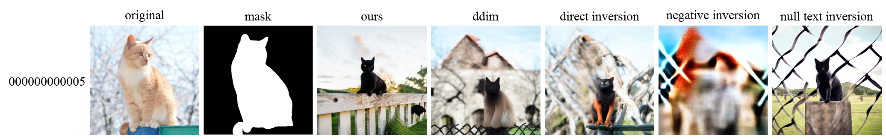
| 지표 ↓ / 모델 → | Ours | w/ DDIM | w/ Direct Inversion | w/ Negative Inversion | w/ Null-text Inversion |
|---|---|---|---|---|---|
| Structure Distance ↑ | 0.4276 | 0.3961 | 0.4755 | 0.2244 | 0.4008 |
| Background Preservation (PSNR ↑) | 15.5412 | 16.7519 | 18.7250 | 10.2756 | 13.0114 |
| Background Preservation (SSIM ↑) | 0.7865 | 0.8350 | 0.8407 | 0.6469 | 0.7025 |
| Background Preservation (LPIPS ↓) | 0.2046 | 0.1595 | 0.1450 | 0.3415 | 0.3517 |
a cup of coffee with drawing of [tulip] putted on the wooden table
→ a cup of coffee with drawing of [lion] putted on the wooden table
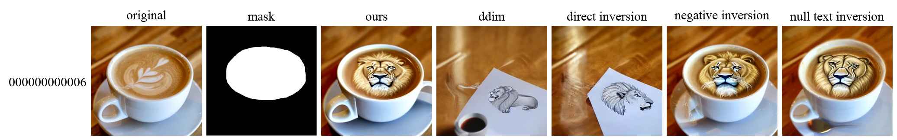
| 지표 ↓ / 모델 → | Ours | w/ DDIM | w/ Direct Inversion | w/ Negative Inversion | w/ Null-text Inversion |
|---|---|---|---|---|---|
| Structure Distance ↑ | 0.7331 | 0.4260 | 0.2815 | 0.6656 | 0.7160 |
| Background Preservation (PSNR ↑) | 22.4451 | 15.8562 | 15.5822 | 24.2838 | 19.0830 |
| Background Preservation (SSIM ↑) | 0.8812 | 0.7162 | 0.7564 | 0.8948 | 0.8240 |
| Background Preservation (LPIPS ↓) | 0.0736 | 0.2810 | 0.2654 | 0.0696 | 0.1321 |
a german shepherd dog stands on the grass with mouth [closed]
→ a german shepherd dog stands on the grass with mouth [opened]
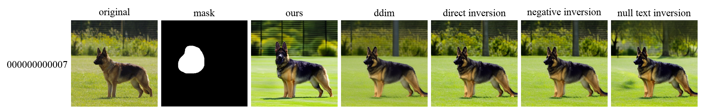
| 지표 ↓ / 모델 → | Ours | w/ DDIM | w/ Direct Inversion | w/ Negative Inversion | w/ Null-text Inversion |
|---|---|---|---|---|---|
| Structure Distance ↑ | 0.8557 | 0.8807 | 0.9105 | 0.9152 | 0.8848 |
| Background Preservation (PSNR ↑) | 16.8565 | 19.3688 | 19.7713 | 19.9499 | 18.8591 |
| Background Preservation (SSIM ↑) | 0.4966 | 0.5855 | 0.6142 | 0.6079 | 0.5755 |
| Background Preservation (LPIPS ↓) | 0.3539 | 0.2387 | 0.1665 | 0.1711 | 0.2329 |
a golden retriever [holding a flower] sitting on the ground in front of fence
→ a golden retriever sitting on the ground in front of fence
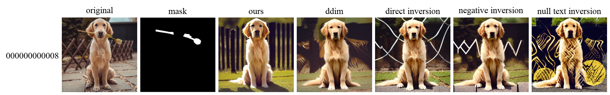
| 지표 ↓ / 모델 → | Ours | w/ DDIM | w/ Direct Inversion | w/ Negative Inversion | w/ Null-text Inversion |
|---|---|---|---|---|---|
| Structure Distance ↑ | 0.7218 | 0.7352 | 0.7646 | 0.7848 | 0.6894 |
| Background Preservation (PSNR ↑) | 14.0325 | 15.0272 | 13.3708 | 13.8682 | 12.8986 |
| Background Preservation (SSIM ↑) | 0.4614 | 0.5512 | 0.5116 | 0.5454 | 0.3694 |
| Background Preservation (LPIPS ↓) | 0.4846 | 0.3946 | 0.4304 | 0.3627 | 0.4779 |
a [dog] is laying down on a white background
→ a [lion] is laying down on a white background
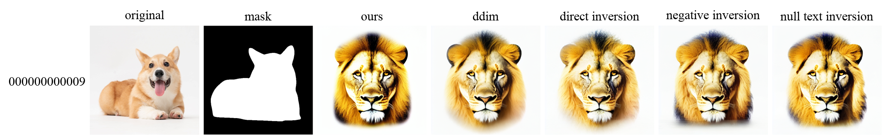
| 지표 ↓ / 모델 → | Ours | w/ DDIM | w/ Direct Inversion | w/ Negative Inversion | w/ Null-text Inversion |
|---|---|---|---|---|---|
| Structure Distance ↑ | 0.2461 | 0.2962 | 0.2873 | 0.2604 | 0.2700 |
| Background Preservation (PSNR ↑) | 12.8069 | 13.7279 | 14.6507 | 13.5545 | 13.2877 |
| Background Preservation (SSIM ↑) | 0.8420 | 0.8519 | 0.8632 | 0.8374 | 0.8415 |
| Background Preservation (LPIPS ↓) | 0.1950 | 0.1750 | 0.1641 | 0.1847 | 0.1928 |
photo of a [goat] and a cat standing on rocks near the ocean
→ photo of a [horse] and a cat standing on rocks near the ocean
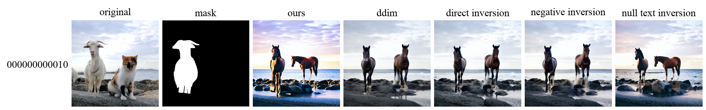
| 지표 ↓ / 모델 → | Ours | w/ DDIM | w/ Direct Inversion | w/ Negative Inversion | w/ Null-text Inversion |
|---|---|---|---|---|---|
| Structure Distance ↑ | 0.4775 | 0.5145 | 0.5423 | 0.5029 | 0.4974 |
| Background Preservation (PSNR ↑) | 14.7563 | 17.0546 | 17.2102 | 16.8119 | 16.0823 |
| Background Preservation (SSIM ↑) | 0.6642 | 0.7166 | 0.7382 | 0.7301 | 0.7025 |
| Background Preservation (LPIPS ↓) | 0.2695 | 0.2200 | 0.1853 | 0.1959 | 0.2194 |
a [colorful] bird standing on a branch
→ a [red] bird standing on a branch
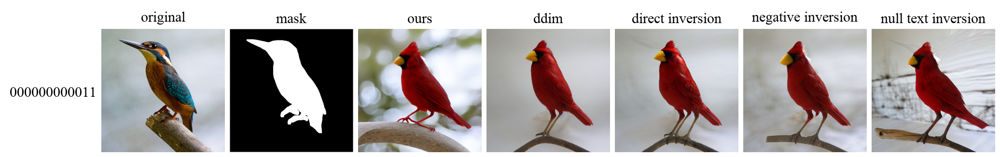
| 지표 ↓ / 모델 → | Ours | w/ DDIM | w/ Direct Inversion | w/ Negative Inversion | w/ Null-text Inversion |
|---|---|---|---|---|---|
| Structure Distance ↑ | 0.6412 | 0.5790 | 0.6394 | 0.6098 | 0.5307 |
| Background Preservation (PSNR ↑) | 15.2334 | 18.7848 | 18.8568 | 18.2988 | 16.0293 |
| Background Preservation (SSIM ↑) | 0.7480 | 0.8719 | 0.8686 | 0.8615 | 0.7393 |
| Background Preservation (LPIPS ↓) | 0.3032 | 0.1276 | 0.1317 | 0.1533 | 0.3139 |
meat [balls] on white plate
→ meat [sushi] on white plate
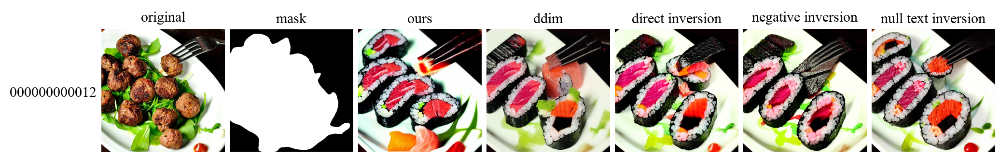
| 지표 ↓ / 모델 → | Ours | w/ DDIM | w/ Direct Inversion | w/ Negative Inversion | w/ Null-text Inversion |
|---|---|---|---|---|---|
| Structure Distance ↑ | 0.4896 | 0.4655 | 0.4814 | 0.5126 | 0.4660 |
| Background Preservation (PSNR ↑) | 16.5504 | 17.8312 | 18.7822 | 18.4617 | 18.7791 |
| Background Preservation (SSIM ↑) | 0.8549 | 0.8939 | 0.8935 | 0.8906 | 0.8915 |
| Background Preservation (LPIPS ↓) | 0.1111 | 0.0812 | 0.0721 | 0.0778 | 0.0661 |
three white [dumplings] on brown bowl
→ three white [sushi] on brown bowl
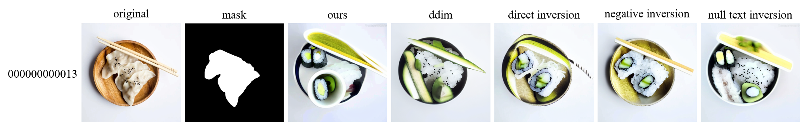
| 지표 ↓ / 모델 → | Ours | w/ DDIM | w/ Direct Inversion | w/ Negative Inversion | w/ Null-text Inversion |
|---|---|---|---|---|---|
| Structure Distance ↑ | 0.4513 | 0.5607 | 0.5129 | 0.6645 | 0.5056 |
| Background Preservation (PSNR ↑) | 15.4099 | 16.7612 | 17.2603 | 20.7205 | 16.0066 |
| Background Preservation (SSIM ↑) | 0.7647 | 0.7917 | 0.8016 | 0.8512 | 0.7878 |
| Background Preservation (LPIPS ↓) | 0.2494 | 0.2126 | 0.1849 | 0.1180 | 0.2369 |
a man with his hands [hanging down] standing by a house
→ a man with his hands [rasing] standing by a house
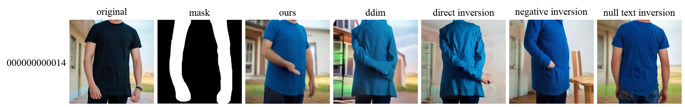
| 지표 ↓ / 모델 → | Ours | w/ DDIM | w/ Direct Inversion | w/ Negative Inversion | w/ Null-text Inversion |
|---|---|---|---|---|---|
| Structure Distance ↑ | 0.7809 | 0.6323 | 0.5879 | 0.6222 | 0.8855 |
| Background Preservation (PSNR ↑) | 14.6394 | 14.2298 | 14.5059 | 14.9834 | 17.2864 |
| Background Preservation (SSIM ↑) | 0.7263 | 0.7058 | 0.7220 | 0.7713 | 0.7826 |
| Background Preservation (LPIPS ↓) | 0.2640 | 0.3019 | 0.2997 | 0.2403 | 0.1753 |
white plate with [fruits] on it
→ white plate with [pizza] on it
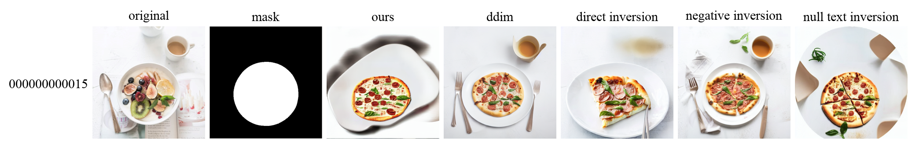
| 지표 ↓ / 모델 → | Ours | w/ DDIM | w/ Direct Inversion | w/ Negative Inversion | w/ Null-text Inversion |
|---|---|---|---|---|---|
| Structure Distance ↑ | 0.4512 | 0.5938 | 0.5598 | 0.5513 | 0.4642 |
| Background Preservation (PSNR ↑) | 14.2080 | 20.0027 | 19.3338 | 20.7392 | 16.9132 |
| Background Preservation (SSIM ↑) | 0.7601 | 0.8310 | 0.8318 | 0.8414 | 0.8002 |
| Background Preservation (LPIPS ↓) | 0.2698 | 0.1716 | 0.1868 | 0.1599 | 0.2391 |
a plate with [steak] on it
→ a plate with [salmon] on it
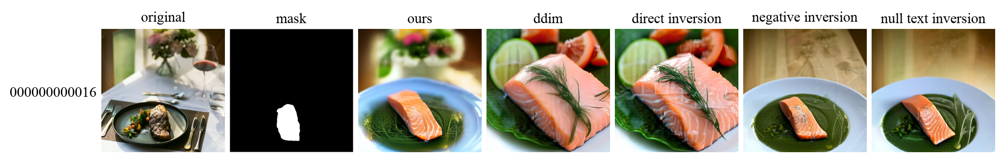
| 지표 ↓ / 모델 → | Ours | w/ DDIM | w/ Direct Inversion | w/ Negative Inversion | w/ Null-text Inversion |
|---|---|---|---|---|---|
| Structure Distance ↑ | 0.5321 | 0.4320 | 0.4496 | 0.5768 | 0.5622 |
| Background Preservation (PSNR ↑) | 14.6577 | 11.5908 | 11.6156 | 13.4043 | 13.4260 |
| Background Preservation (SSIM ↑) | 0.6039 | 0.4586 | 0.4637 | 0.5857 | 0.5798 |
| Background Preservation (LPIPS ↓) | 0.4575 | 0.5649 | 0.5475 | 0.4583 | 0.4851 |
photo of a statue [in front view]
→ photo of a statue [in side view]
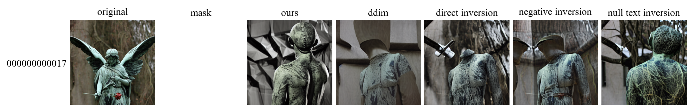
| 지표 ↓ / 모델 → | Ours | w/ DDIM | w/ Direct Inversion | w/ Negative Inversion | w/ Null-text Inversion |
|---|---|---|---|---|---|
| Structure Distance ↑ | 0.5119 | 0.5116 | 0.6247 | 0.6189 | 0.5415 |
| Background Preservation (PSNR ↑) | inf | inf | inf | inf | inf |
| Background Preservation (SSIM ↑) | 1.0000 | 1.0000 | 1.0000 | 1.0000 | 1.0000 |
| Background Preservation (LPIPS ↓) | 0.0000 | 0.0000 | 0.0000 | 0.0000 | 0.0000 |
the statue of liberty holding a [torch]
→ the statue of liberty holding a [flower]
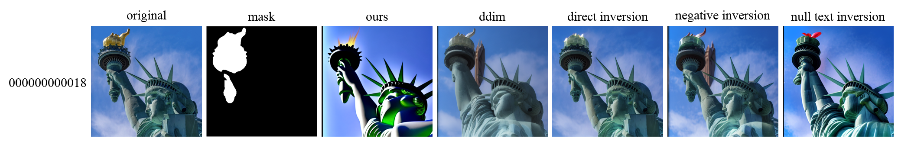
| 지표 ↓ / 모델 → | Ours | w/ DDIM | w/ Direct Inversion | w/ Negative Inversion | w/ Null-text Inversion |
|---|---|---|---|---|---|
| Structure Distance ↑ | 0.6028 | 0.8414 | 0.9566 | 0.9192 | 0.8118 |
| Background Preservation (PSNR ↑) | 13.1640 | 18.2524 | 26.8410 | 19.4027 | 15.4458 |
| Background Preservation (SSIM ↑) | 0.6358 | 0.7526 | 0.9031 | 0.8212 | 0.6870 |
| Background Preservation (LPIPS ↓) | 0.2875 | 0.2071 | 0.0374 | 0.1368 | 0.2334 |
white [tiger] on brown ground
→ white [cat] on brown ground
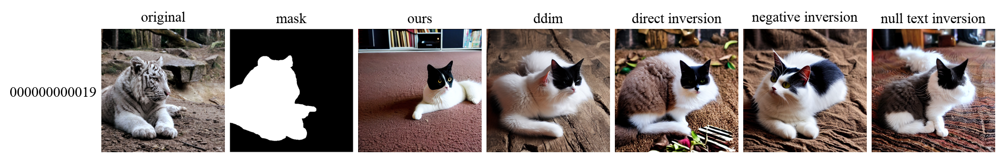
| 지표 ↓ / 모델 → | Ours | w/ DDIM | w/ Direct Inversion | w/ Negative Inversion | w/ Null-text Inversion |
|---|---|---|---|---|---|
| Structure Distance ↑ | 0.2629 | 0.3308 | 0.3467 | 0.3338 | 0.2979 |
| Background Preservation (PSNR ↑) | 14.6325 | 16.5990 | 14.7137 | 16.9380 | 15.7133 |
| Background Preservation (SSIM ↑) | 0.5500 | 0.5697 | 0.6058 | 0.6510 | 0.6069 |
| Background Preservation (LPIPS ↓) | 0.3508 | 0.3241 | 0.3231 | 0.2916 | 0.3125 |
two birds sitting on a branch
→ two [origami] birds sitting on a branch
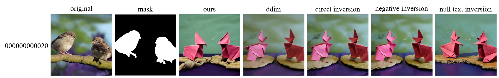
| 지표 ↓ / 모델 → | Ours | w/ DDIM | w/ Direct Inversion | w/ Negative Inversion | w/ Null-text Inversion |
|---|---|---|---|---|---|
| Structure Distance ↑ | 0.2667 | 0.3080 | 0.3361 | 0.3071 | 0.3353 |
| Background Preservation (PSNR ↑) | 16.5350 | 18.5767 | 18.8749 | 18.3457 | 18.0602 |
| Background Preservation (SSIM ↑) | 0.7309 | 0.7923 | 0.8013 | 0.7864 | 0.7727 |
| Background Preservation (LPIPS ↓) | 0.2986 | 0.2575 | 0.2223 | 0.2493 | 0.2737 |
two parrots sitting on a stick, city street background
→ two [kissing] parrots sitting on a stick, city street background
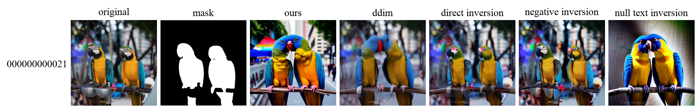
| 지표 ↓ / 모델 → | Ours | w/ DDIM | w/ Direct Inversion | w/ Negative Inversion | w/ Null-text Inversion |
|---|---|---|---|---|---|
| Structure Distance ↑ | 0.8446 | 0.8344 | 0.9348 | 0.9276 | 0.7757 |
| Background Preservation (PSNR ↑) | 13.3058 | 18.4093 | 21.4150 | 20.8439 | 12.7097 |
| Background Preservation (SSIM ↑) | 0.5573 | 0.7756 | 0.8627 | 0.8416 | 0.5022 |
| Background Preservation (LPIPS ↓) | 0.3713 | 0.2248 | 0.1115 | 0.1303 | 0.4552 |
an orange van with [surfboards] on top
→ an orange van with [flowers] on top
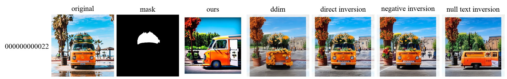
| 지표 ↓ / 모델 → | Ours | w/ DDIM | w/ Direct Inversion | w/ Negative Inversion | w/ Null-text Inversion |
|---|---|---|---|---|---|
| Structure Distance ↑ | 0.6403 | 0.6211 | 0.8356 | 0.7907 | 0.5969 |
| Background Preservation (PSNR ↑) | 9.6286 | 12.7078 | 13.6220 | 13.2499 | 11.6447 |
| Background Preservation (SSIM ↑) | 0.3778 | 0.4704 | 0.5453 | 0.5396 | 0.4644 |
| Background Preservation (LPIPS ↓) | 0.4847 | 0.4143 | 0.3130 | 0.3218 | 0.4133 |
a [gray] horse in the field
→ a [white] horse in the field
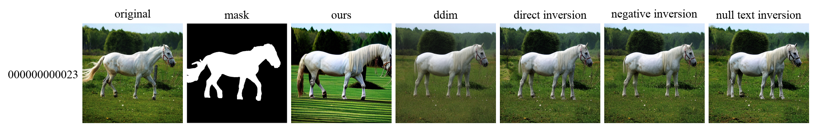
| 지표 ↓ / 모델 → | Ours | w/ DDIM | w/ Direct Inversion | w/ Negative Inversion | w/ Null-text Inversion |
|---|---|---|---|---|---|
| Structure Distance ↑ | 0.8136 | 0.9068 | 0.9268 | 0.9245 | 0.9121 |
| Background Preservation (PSNR ↑) | 16.5872 | 23.3799 | 23.8460 | 23.9868 | 22.8415 |
| Background Preservation (SSIM ↑) | 0.4874 | 0.6369 | 0.6605 | 0.6625 | 0.6415 |
| Background Preservation (LPIPS ↓) | 0.3519 | 0.1919 | 0.1190 | 0.1090 | 0.1360 |
a [white] horse running in the sunset
→ a [golden] horse running in the sunset
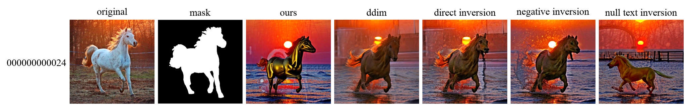
| 지표 ↓ / 모델 → | Ours | w/ DDIM | w/ Direct Inversion | w/ Negative Inversion | w/ Null-text Inversion |
|---|---|---|---|---|---|
| Structure Distance ↑ | 0.3884 | 0.5775 | 0.5868 | 0.5168 | 0.4943 |
| Background Preservation (PSNR ↑) | 15.5763 | 18.6156 | 18.2845 | 17.0564 | 17.5009 |
| Background Preservation (SSIM ↑) | 0.5455 | 0.5900 | 0.6002 | 0.5532 | 0.5677 |
| Background Preservation (LPIPS ↓) | 0.3765 | 0.3151 | 0.3013 | 0.3353 | 0.3276 |
a [woman] with blue hair wearing a shirt
→ a [storm-trooper] with blue hair wearing a shirt
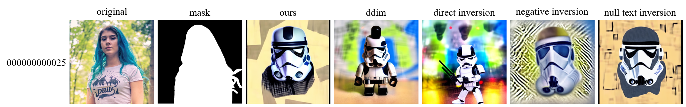
| 지표 ↓ / 모델 → | Ours | w/ DDIM | w/ Direct Inversion | w/ Negative Inversion | w/ Null-text Inversion |
|---|---|---|---|---|---|
| Structure Distance ↑ | 0.2893 | 0.3116 | 0.3439 | 0.3133 | 0.2724 |
| Background Preservation (PSNR ↑) | 15.2000 | 17.8237 | 15.9234 | 14.7056 | 15.2918 |
| Background Preservation (SSIM ↑) | 0.7444 | 0.8075 | 0.7735 | 0.6779 | 0.7577 |
| Background Preservation (LPIPS ↓) | 0.2714 | 0.2010 | 0.2229 | 0.2679 | 0.2788 |
a yellow bird with a red beak sitting on a branch
→ a [crochet] bird with a red beak sitting on a branch
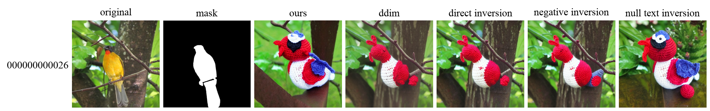
| 지표 ↓ / 모델 → | Ours | w/ DDIM | w/ Direct Inversion | w/ Negative Inversion | w/ Null-text Inversion |
|---|---|---|---|---|---|
| Structure Distance ↑ | 0.3529 | 0.4487 | 0.4649 | 0.4633 | 0.2749 |
| Background Preservation (PSNR ↑) | 14.7963 | 19.2936 | 19.1654 | 18.6126 | 14.6604 |
| Background Preservation (SSIM ↑) | 0.6445 | 0.7816 | 0.7981 | 0.7897 | 0.6518 |
| Background Preservation (LPIPS ↓) | 0.4122 | 0.2684 | 0.2329 | 0.2408 | 0.4025 |
a [opened] eyes cat sitting on wooden floor
→ a [closed] eyes cat sitting on wooden floor
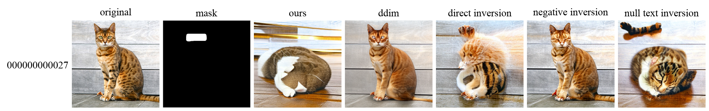
| 지표 ↓ / 모델 → | Ours | w/ DDIM | w/ Direct Inversion | w/ Negative Inversion | w/ Null-text Inversion |
|---|---|---|---|---|---|
| Structure Distance ↑ | 0.4417 | 0.8670 | 0.6414 | 0.9255 | 0.6764 |
| Background Preservation (PSNR ↑) | 12.7593 | 20.0415 | 16.2474 | 21.4911 | 12.9241 |
| Background Preservation (SSIM ↑) | 0.3620 | 0.5836 | 0.4914 | 0.6398 | 0.4703 |
| Background Preservation (LPIPS ↓) | 0.5501 | 0.1783 | 0.3460 | 0.1279 | 0.4187 |
white flowers on a tree branch with blue sky background
→ [an oil painting of] white flowers on a tree branch with blue sky background
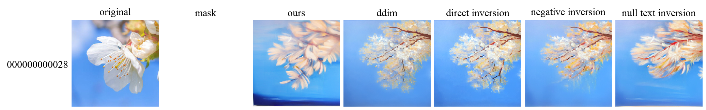
| 지표 ↓ / 모델 → | Ours | w/ DDIM | w/ Direct Inversion | w/ Negative Inversion | w/ Null-text Inversion |
|---|---|---|---|---|---|
| Structure Distance ↑ | 0.4721 | 0.3848 | 0.4250 | 0.4278 | 0.5069 |
| Background Preservation (PSNR ↑) | inf | inf | inf | inf | inf |
| Background Preservation (SSIM ↑) | 1.0000 | 1.0000 | 1.0000 | 1.0000 | 1.0000 |
| Background Preservation (LPIPS ↓) | 0.0000 | 0.0000 | 0.0000 | 0.0000 | 0.0000 |
a [kitten] walking through the grass
→ a [duck] walking through the grass
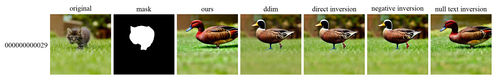
| 지표 ↓ / 모델 → | Ours | w/ DDIM | w/ Direct Inversion | w/ Negative Inversion | w/ Null-text Inversion |
|---|---|---|---|---|---|
| Structure Distance ↑ | 0.4108 | 0.3930 | 0.4068 | 0.4190 | 0.3823 |
| Background Preservation (PSNR ↑) | 17.2852 | 19.4230 | 19.7342 | 19.3226 | 17.9862 |
| Background Preservation (SSIM ↑) | 0.7395 | 0.8032 | 0.8213 | 0.8152 | 0.7436 |
| Background Preservation (LPIPS ↓) | 0.2629 | 0.1985 | 0.1698 | 0.1709 | 0.2425 |
a [stream] in a lush green forest with rocks
→ a [road] in a lush green forest with rocks
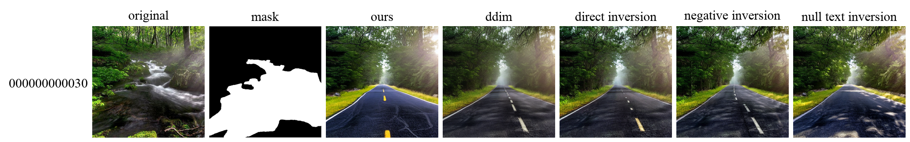
| 지표 ↓ / 모델 → | Ours | w/ DDIM | w/ Direct Inversion | w/ Negative Inversion | w/ Null-text Inversion |
|---|---|---|---|---|---|
| Structure Distance ↑ | 0.3989 | 0.4458 | 0.4341 | 0.4484 | 0.4687 |
| Background Preservation (PSNR ↑) | 17.0544 | 18.4163 | 18.1583 | 18.0573 | 18.8586 |
| Background Preservation (SSIM ↑) | 0.6200 | 0.6134 | 0.6252 | 0.6130 | 0.6247 |
| Background Preservation (LPIPS ↓) | 0.2449 | 0.2272 | 0.2085 | 0.2055 | 0.1810 |
a [red] rose in the dark
→ a [blue] rose in the dark
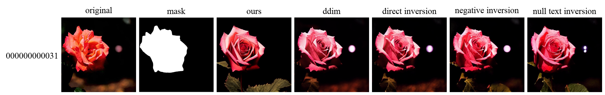
| 지표 ↓ / 모델 → | Ours | w/ DDIM | w/ Direct Inversion | w/ Negative Inversion | w/ Null-text Inversion |
|---|---|---|---|---|---|
| Structure Distance ↑ | 0.6822 | 0.7383 | 0.7804 | 0.7885 | 0.7481 |
| Background Preservation (PSNR ↑) | 23.7514 | 23.2822 | 24.6784 | 22.5342 | 23.0856 |
| Background Preservation (SSIM ↑) | 0.8450 | 0.8385 | 0.8882 | 0.8660 | 0.8527 |
| Background Preservation (LPIPS ↓) | 0.2142 | 0.1520 | 0.1240 | 0.1689 | 0.1846 |
a group of [pink] flowers hanging from a tree
→ a group of [red] flowers hanging from a tree
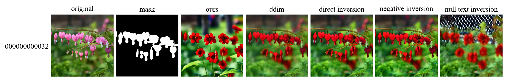
| 지표 ↓ / 모델 → | Ours | w/ DDIM | w/ Direct Inversion | w/ Negative Inversion | w/ Null-text Inversion |
|---|---|---|---|---|---|
| Structure Distance ↑ | 0.6332 | 0.8763 | 0.9073 | 0.8922 | 0.3873 |
| Background Preservation (PSNR ↑) | 16.2951 | 22.6066 | 22.2928 | 21.5187 | 15.7616 |
| Background Preservation (SSIM ↑) | 0.6463 | 0.8310 | 0.8404 | 0.8147 | 0.5901 |
| Background Preservation (LPIPS ↓) | 0.3587 | 0.1210 | 0.1078 | 0.1355 | 0.4004 |
a cartoon of a [boy] walking his dog in autumn
→ a cartoon of a [girl] walking his dog in autumn
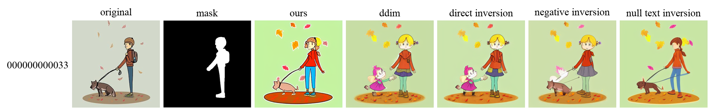
| 지표 ↓ / 모델 → | Ours | w/ DDIM | w/ Direct Inversion | w/ Negative Inversion | w/ Null-text Inversion |
|---|---|---|---|---|---|
| Structure Distance ↑ | 0.8216 | 0.7370 | 0.7498 | 0.7752 | 0.7643 |
| Background Preservation (PSNR ↑) | 15.0182 | 16.1451 | 16.4645 | 17.8359 | 16.9810 |
| Background Preservation (SSIM ↑) | 0.8093 | 0.8140 | 0.8251 | 0.8530 | 0.8401 |
| Background Preservation (LPIPS ↓) | 0.2743 | 0.2504 | 0.2437 | 0.2063 | 0.2302 |
a mother duck and her babies are standing near the water
→ [a sketch painting of] a mother duck and her babies are standing near the water
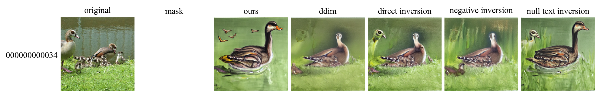
| 지표 ↓ / 모델 → | Ours | w/ DDIM | w/ Direct Inversion | w/ Negative Inversion | w/ Null-text Inversion |
|---|---|---|---|---|---|
| Structure Distance ↑ | 0.3590 | 0.5401 | 0.4492 | 0.4924 | 0.4274 |
| Background Preservation (PSNR ↑) | inf | inf | inf | inf | inf |
| Background Preservation (SSIM ↑) | 1.0000 | 1.0000 | 1.0000 | 1.0000 | 1.0000 |
| Background Preservation (LPIPS ↓) | 0.0000 | 0.0000 | 0.0000 | 0.0000 | 0.0000 |
[photograph] - window of the world by jimmy kirk
→ [painting] - window of the world by jimmy kirk
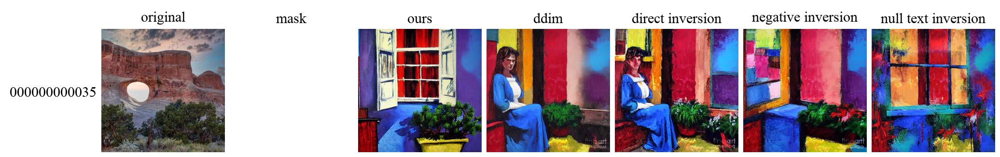
| 지표 ↓ / 모델 → | Ours | w/ DDIM | w/ Direct Inversion | w/ Negative Inversion | w/ Null-text Inversion |
|---|---|---|---|---|---|
| Structure Distance ↑ | 0.2321 | 0.2410 | 0.2694 | 0.2472 | 0.2626 |
| Background Preservation (PSNR ↑) | inf | inf | inf | inf | inf |
| Background Preservation (SSIM ↑) | 1.0000 | 1.0000 | 1.0000 | 1.0000 | 1.0000 |
| Background Preservation (LPIPS ↓) | 0.0000 | 0.0000 | 0.0000 | 0.0000 | 0.0000 |
[smoke]
→ [fire]
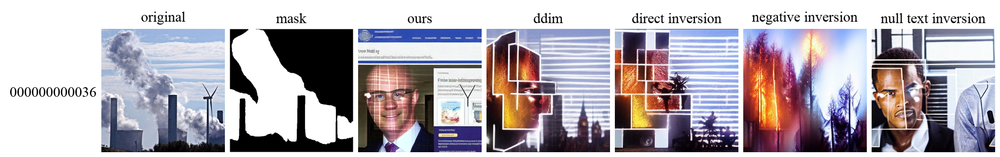
| 지표 ↓ / 모델 → | Ours | w/ DDIM | w/ Direct Inversion | w/ Negative Inversion | w/ Null-text Inversion |
|---|---|---|---|---|---|
| Structure Distance ↑ | 0.2473 | 0.3191 | 0.3511 | 0.3993 | 0.3322 |
| Background Preservation (PSNR ↑) | 13.6153 | 16.4831 | 15.9116 | 16.0401 | 14.3508 |
| Background Preservation (SSIM ↑) | 0.7027 | 0.7234 | 0.7159 | 0.7450 | 0.7093 |
| Background Preservation (LPIPS ↓) | 0.2902 | 0.2277 | 0.2487 | 0.2713 | 0.3036 |
mountain landscape with [flowers and] withered grass
→ mountain landscape with withered grass
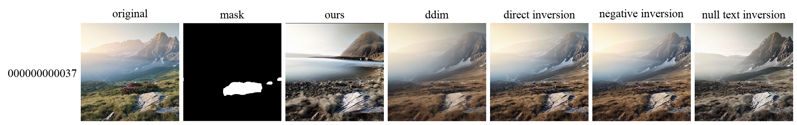
| 지표 ↓ / 모델 → | Ours | w/ DDIM | w/ Direct Inversion | w/ Negative Inversion | w/ Null-text Inversion |
|---|---|---|---|---|---|
| Structure Distance ↑ | 0.5612 | 0.8275 | 0.8882 | 0.8810 | 0.8729 |
| Background Preservation (PSNR ↑) | 16.1354 | 19.6819 | 19.9402 | 20.0512 | 17.4394 |
| Background Preservation (SSIM ↑) | 0.5571 | 0.6284 | 0.6417 | 0.6459 | 0.6024 |
| Background Preservation (LPIPS ↓) | 0.3261 | 0.1953 | 0.1745 | 0.1654 | 0.2173 |
a little girl with [green] eyes and flowers in a blue dress
→ a little girl with [blue] eyes and flowers in a blue dress
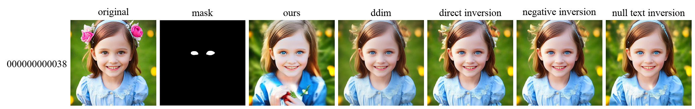
| 지표 ↓ / 모델 → | Ours | w/ DDIM | w/ Direct Inversion | w/ Negative Inversion | w/ Null-text Inversion |
|---|---|---|---|---|---|
| Structure Distance ↑ | 0.7486 | 0.8975 | 0.9417 | 0.9227 | 0.8987 |
| Background Preservation (PSNR ↑) | 15.1224 | 20.7753 | 21.3178 | 21.0144 | 18.6580 |
| Background Preservation (SSIM ↑) | 0.6248 | 0.7976 | 0.8203 | 0.8180 | 0.7464 |
| Background Preservation (LPIPS ↓) | 0.3259 | 0.1270 | 0.0943 | 0.1012 | 0.1845 |
two ducks in the [dirt]
→ two ducks in the [sea]
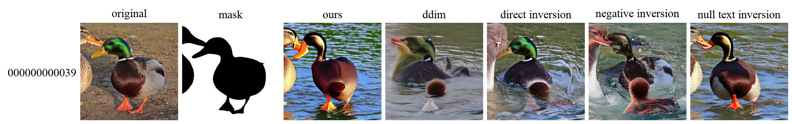
| 지표 ↓ / 모델 → | Ours | w/ DDIM | w/ Direct Inversion | w/ Negative Inversion | w/ Null-text Inversion |
|---|---|---|---|---|---|
| Structure Distance ↑ | 0.7067 | 0.2468 | 0.6184 | 0.5618 | 0.7656 |
| Background Preservation (PSNR ↑) | 17.9226 | 19.4989 | 18.9486 | 19.2189 | 18.5108 |
| Background Preservation (SSIM ↑) | 0.7438 | 0.7617 | 0.7681 | 0.7665 | 0.7525 |
| Background Preservation (LPIPS ↓) | 0.2071 | 0.1976 | 0.1623 | 0.1607 | 0.1784 |
a cat sitting with beads collar
→ a cat sitting with beads collar [putting hands down]
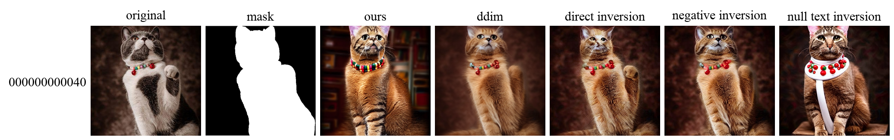
| 지표 ↓ / 모델 → | Ours | w/ DDIM | w/ Direct Inversion | w/ Negative Inversion | w/ Null-text Inversion |
|---|---|---|---|---|---|
| Structure Distance ↑ | 0.5684 | 0.6523 | 0.6935 | 0.7146 | 0.6122 |
| Background Preservation (PSNR ↑) | 21.0927 | 28.7782 | 30.2749 | 32.4619 | 20.9407 |
| Background Preservation (SSIM ↑) | 0.7836 | 0.9343 | 0.9466 | 0.9559 | 0.8496 |
| Background Preservation (LPIPS ↓) | 0.1989 | 0.0830 | 0.0439 | 0.0341 | 0.1581 |
the arctic sky
→ [a castle in] the arctic sky
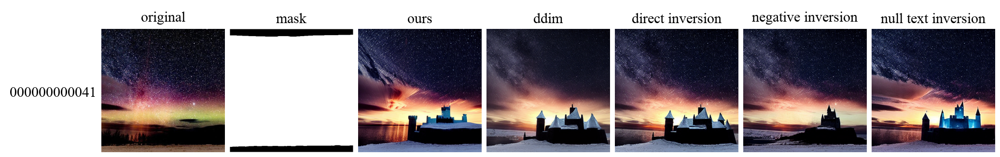
| 지표 ↓ / 모델 → | Ours | w/ DDIM | w/ Direct Inversion | w/ Negative Inversion | w/ Null-text Inversion |
|---|---|---|---|---|---|
| Structure Distance ↑ | 0.6671 | 0.5663 | 0.6098 | 0.7172 | 0.6394 |
| Background Preservation (PSNR ↑) | 24.8342 | 25.0677 | 24.4710 | 26.9624 | 26.5072 |
| Background Preservation (SSIM ↑) | 0.9387 | 0.9349 | 0.9377 | 0.9389 | 0.9391 |
| Background Preservation (LPIPS ↓) | 0.0393 | 0.0419 | 0.0330 | 0.0265 | 0.0267 |
a [black] wolf is standing on rocks in a dark forest
→ a [white] wolf is standing on rocks in a dark forest
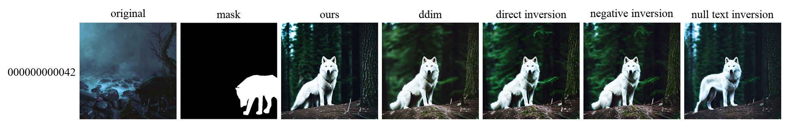
| 지표 ↓ / 모델 → | Ours | w/ DDIM | w/ Direct Inversion | w/ Negative Inversion | w/ Null-text Inversion |
|---|---|---|---|---|---|
| Structure Distance ↑ | 0.2136 | 0.2050 | 0.2142 | 0.2226 | 0.2420 |
| Background Preservation (PSNR ↑) | 11.5910 | 11.5804 | 11.4677 | 11.5911 | 12.4762 |
| Background Preservation (SSIM ↑) | 0.4266 | 0.4866 | 0.4409 | 0.4637 | 0.5162 |
| Background Preservation (LPIPS ↓) | 0.5104 | 0.4699 | 0.4838 | 0.4743 | 0.4361 |
a [large red] cargo ship in the ocean at sunset
→ a [small blue] cargo ship in the ocean at sunset
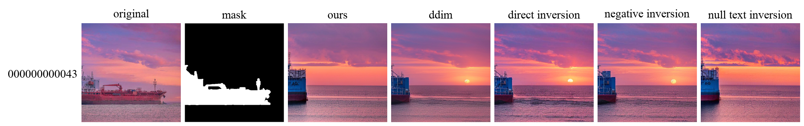
| 지표 ↓ / 모델 → | Ours | w/ DDIM | w/ Direct Inversion | w/ Negative Inversion | w/ Null-text Inversion |
|---|---|---|---|---|---|
| Structure Distance ↑ | 0.6722 | 0.6434 | 0.6718 | 0.6200 | 0.7113 |
| Background Preservation (PSNR ↑) | 20.8569 | 21.9498 | 21.6054 | 22.0612 | 19.9566 |
| Background Preservation (SSIM ↑) | 0.7844 | 0.8080 | 0.7942 | 0.8010 | 0.7510 |
| Background Preservation (LPIPS ↓) | 0.1297 | 0.0799 | 0.1013 | 0.0914 | 0.1449 |
a cat sitting in the [grass]
→ a cat sitting in the [rocks]
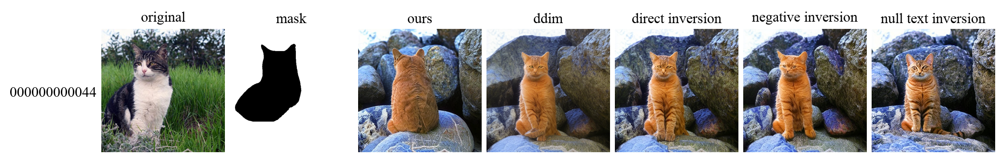
| 지표 ↓ / 모델 → | Ours | w/ DDIM | w/ Direct Inversion | w/ Negative Inversion | w/ Null-text Inversion |
|---|---|---|---|---|---|
| Structure Distance ↑ | 0.3869 | 0.5895 | 0.5956 | 0.5768 | 0.5582 |
| Background Preservation (PSNR ↑) | 16.3619 | 17.0701 | 17.0134 | 16.2279 | 16.4703 |
| Background Preservation (SSIM ↑) | 0.8470 | 0.8586 | 0.8542 | 0.8491 | 0.8402 |
| Background Preservation (LPIPS ↓) | 0.1224 | 0.1029 | 0.1054 | 0.1143 | 0.1244 |
the christmas illustration of a santa's [laughing] face
→ the christmas illustration of a santa's [angry] face
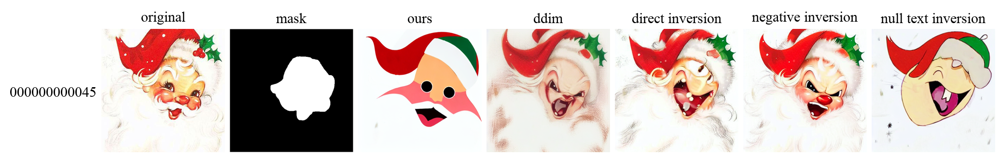
| 지표 ↓ / 모델 → | Ours | w/ DDIM | w/ Direct Inversion | w/ Negative Inversion | w/ Null-text Inversion |
|---|---|---|---|---|---|
| Structure Distance ↑ | 0.4625 | 0.7513 | 0.8082 | 0.8367 | 0.5613 |
| Background Preservation (PSNR ↑) | 13.9619 | 17.6933 | 20.1764 | 19.1873 | 15.5619 |
| Background Preservation (SSIM ↑) | 0.7301 | 0.7295 | 0.7997 | 0.8200 | 0.7689 |
| Background Preservation (LPIPS ↓) | 0.2975 | 0.2332 | 0.1333 | 0.1203 | 0.2590 |
[painting] of clouds in the sky
→ [photo] of clouds in the sky
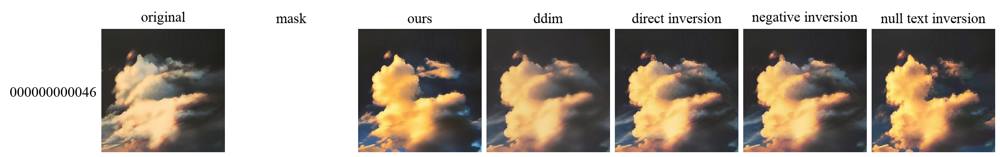
| 지표 ↓ / 모델 → | Ours | w/ DDIM | w/ Direct Inversion | w/ Negative Inversion | w/ Null-text Inversion |
|---|---|---|---|---|---|
| Structure Distance ↑ | 0.7467 | 0.8001 | 0.8569 | 0.8642 | 0.7500 |
| Background Preservation (PSNR ↑) | inf | inf | inf | inf | inf |
| Background Preservation (SSIM ↑) | 1.0000 | 1.0000 | 1.0000 | 1.0000 | 1.0000 |
| Background Preservation (LPIPS ↓) | 0.0000 | 0.0000 | 0.0000 | 0.0000 | 0.0000 |
[rusty] car by jill kaufman
→ [shiny] car by jill kaufman
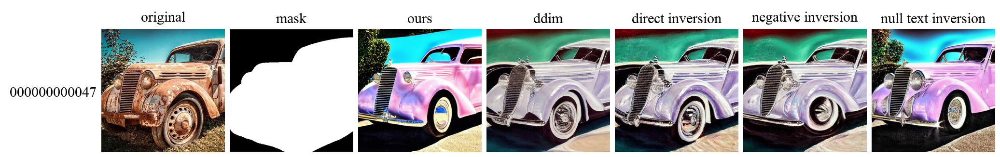
| 지표 ↓ / 모델 → | Ours | w/ DDIM | w/ Direct Inversion | w/ Negative Inversion | w/ Null-text Inversion |
|---|---|---|---|---|---|
| Structure Distance ↑ | 0.7074 | 0.6095 | 0.6512 | 0.6249 | 0.7374 |
| Background Preservation (PSNR ↑) | 16.1217 | 17.7919 | 17.8968 | 17.2326 | 18.5299 |
| Background Preservation (SSIM ↑) | 0.8081 | 0.8085 | 0.8057 | 0.8032 | 0.8392 |
| Background Preservation (LPIPS ↓) | 0.1420 | 0.1666 | 0.1577 | 0.1630 | 0.0970 |
sunset over a field with clouds and a [bright] sky
→ sunset over a field with clouds and a [dark] sky
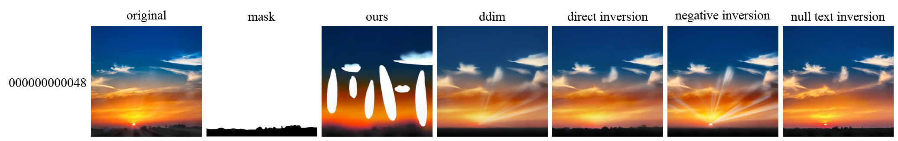
| 지표 ↓ / 모델 → | Ours | w/ DDIM | w/ Direct Inversion | w/ Negative Inversion | w/ Null-text Inversion |
|---|---|---|---|---|---|
| Structure Distance ↑ | 0.4355 | 0.7341 | 0.7874 | 0.7412 | 0.8029 |
| Background Preservation (PSNR ↑) | 36.8235 | 31.9017 | 31.2716 | 31.6660 | 31.3204 |
| Background Preservation (SSIM ↑) | 0.9852 | 0.9667 | 0.9586 | 0.9602 | 0.9674 |
| Background Preservation (LPIPS ↓) | 0.0195 | 0.0262 | 0.0236 | 0.0224 | 0.0254 |
[black] chair in a conference room
→ [blue] chair in a conference room
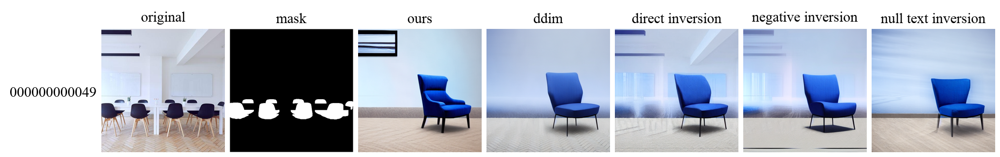
| 지표 ↓ / 모델 → | Ours | w/ DDIM | w/ Direct Inversion | w/ Negative Inversion | w/ Null-text Inversion |
|---|---|---|---|---|---|
| Structure Distance ↑ | 0.5839 | 0.5973 | 0.6629 | 0.5829 | 0.5633 |
| Background Preservation (PSNR ↑) | 14.2332 | 15.2851 | 15.9317 | 15.0191 | 14.9339 |
| Background Preservation (SSIM ↑) | 0.6510 | 0.7259 | 0.7098 | 0.6807 | 0.6773 |
| Background Preservation (LPIPS ↓) | 0.3529 | 0.3227 | 0.2708 | 0.3578 | 0.3486 |
a bird standing on [clods]
→ a bird standing on [eggs]
| 지표 ↓ / 모델 → | Ours | w/ DDIM | w/ Direct Inversion | w/ Negative Inversion | w/ Null-text Inversion |
|---|---|---|---|---|---|
| Structure Distance ↑ | 0.2770 | 0.4269 | 0.4394 | 0.4369 | 0.4553 |
| Background Preservation (PSNR ↑) | 12.3576 | 14.5924 | 14.2314 | 14.2756 | 14.8258 |
| Background Preservation (SSIM ↑) | 0.5351 | 0.7066 | 0.6876 | 0.6900 | 0.6295 |
| Background Preservation (LPIPS ↓) | 0.4940 | 0.3675 | 0.3642 | 0.3574 | 0.4115 |
a painting of [pink and white flowers] in a blue vase
→ a painting of a blue vase
| 지표 ↓ / 모델 → | Ours | w/ DDIM | w/ Direct Inversion | w/ Negative Inversion | w/ Null-text Inversion |
|---|---|---|---|---|---|
| Structure Distance ↑ | 0.5880 | 0.7537 | 0.8294 | 0.7914 | 0.6741 |
| Background Preservation (PSNR ↑) | 17.9028 | 22.2058 | 22.7732 | 22.4986 | 19.9361 |
| Background Preservation (SSIM ↑) | 0.7284 | 0.8035 | 0.8602 | 0.8486 | 0.7895 |
| Background Preservation (LPIPS ↓) | 0.2307 | 0.1356 | 0.0894 | 0.0992 | 0.1742 |
a logo of [bird] shape in a black background
→ a logo of [X] shpae in a black background
| 지표 ↓ / 모델 → | Ours | w/ DDIM | w/ Direct Inversion | w/ Negative Inversion | w/ Null-text Inversion |
|---|---|---|---|---|---|
| Structure Distance ↑ | 0.3634 | 0.4308 | 0.4151 | 0.4822 | 0.4579 |
| Background Preservation (PSNR ↑) | 29.8106 | 38.2828 | 39.5794 | 48.4744 | 41.3138 |
| Background Preservation (SSIM ↑) | 0.9895 | 0.9146 | 0.9957 | 0.9979 | 0.9979 |
| Background Preservation (LPIPS ↓) | 0.0708 | 0.0687 | 0.0279 | 0.0257 | 0.0165 |
a fluffy dog with a blue leash sitting in the [grass]
→ a fluffy dog with a blue leash sitting in the [ground]
| 지표 ↓ / 모델 → | Ours | w/ DDIM | w/ Direct Inversion | w/ Negative Inversion | w/ Null-text Inversion |
|---|---|---|---|---|---|
| Structure Distance ↑ | 0.5030 | 0.7230 | 0.7413 | 0.8403 | 0.4889 |
| Background Preservation (PSNR ↑) | 17.6772 | 22.7045 | 22.0683 | 21.9773 | 18.4795 |
| Background Preservation (SSIM ↑) | 0.6615 | 0.6978 | 0.7167 | 0.7222 | 0.6749 |
| Background Preservation (LPIPS ↓) | 0.2350 | 0.1610 | 0.1320 | 0.1208 | 0.2262 |
a camera and a notebook on a [bed]
→ a camera and a notebook on a [table]
| 지표 ↓ / 모델 → | Ours | w/ DDIM | w/ Direct Inversion | w/ Negative Inversion | w/ Null-text Inversion |
|---|---|---|---|---|---|
| Structure Distance ↑ | 0.3740 | 0.5449 | 0.6039 | 0.7918 | 0.6647 |
| Background Preservation (PSNR ↑) | 13.4749 | 15.1147 | 16.2447 | 17.2553 | 16.2730 |
| Background Preservation (SSIM ↑) | 0.5823 | 0.6341 | 0.6611 | 0.6799 | 0.6195 |
| Background Preservation (LPIPS ↓) | 0.3828 | 0.2992 | 0.2721 | 0.2441 | 0.2883 |
a black dog is looking at the camera in the [snow]
→ a black dog is looking at the camera in the [rain]
| 지표 ↓ / 모델 → | Ours | w/ DDIM | w/ Direct Inversion | w/ Negative Inversion | w/ Null-text Inversion |
|---|---|---|---|---|---|
| Structure Distance ↑ | 0.4910 | 0.6783 | 0.7702 | 0.8079 | 0.4777 |
| Background Preservation (PSNR ↑) | inf | inf | inf | inf | inf |
| Background Preservation (SSIM ↑) | 1.0000 | 1.0000 | 1.0000 | 1.0000 | 1.0000 |
| Background Preservation (LPIPS ↓) | 0.0000 | 0.0000 | 0.0000 | 0.0000 | 0.0000 |
a [meerkat] puppy wrapped in a blue towel
→ a [lion] puppy wrapped in a blue towel
| 지표 ↓ / 모델 → | Ours | w/ DDIM | w/ Direct Inversion | w/ Negative Inversion | w/ Null-text Inversion |
|---|---|---|---|---|---|
| Structure Distance ↑ | 0.4956 | 0.5492 | 0.4957 | 0.5048 | 0.4322 |
| Background Preservation (PSNR ↑) | 13.2104 | 18.8329 | 19.1906 | 19.2374 | 15.3103 |
| Background Preservation (SSIM ↑) | 0.6562 | 0.5885 | 0.7580 | 0.7509 | 0.6772 |
| Background Preservation (LPIPS ↓) | 0.2969 | 0.1381 | 0.1212 | 0.1292 | 0.2097 |
an owl sitting on a branch
→ [a photo of] an owl sitting on a branch
| 지표 ↓ / 모델 → | Ours | w/ DDIM | w/ Direct Inversion | w/ Negative Inversion | w/ Null-text Inversion |
|---|---|---|---|---|---|
| Structure Distance ↑ | 0.4919 | 0.8298 | 0.9734 | 0.9280 | 0.6023 |
| Background Preservation (PSNR ↑) | inf | inf | inf | inf | inf |
| Background Preservation (SSIM ↑) | 1.0000 | 1.0000 | 1.0000 | 1.0000 | 1.0000 |
| Background Preservation (LPIPS ↓) | 0.0000 | 0.0000 | 0.0000 | 0.0000 | 0.0000 |
[purple] tulips in vase
→ [yellow] tulips in vase
| 지표 ↓ / 모델 → | Ours | w/ DDIM | w/ Direct Inversion | w/ Negative Inversion | w/ Null-text Inversion |
|---|---|---|---|---|---|
| Structure Distance ↑ | 0.4089 | 0.4713 | 0.5988 | 0.6046 | 0.4897 |
| Background Preservation (PSNR ↑) | 12.8229 | 17.9683 | 17.3363 | 17.3611 | 14.0434 |
| Background Preservation (SSIM ↑) | 0.2341 | 0.3513 | 0.3410 | 0.3492 | 0.2327 |
| Background Preservation (LPIPS ↓) | 0.6996 | 0.3299 | 0.3025 | 0.3706 | 0.6126 |
a cartoon goat
→ a cartoon goat [face backward]
| 지표 ↓ / 모델 → | Ours | w/ DDIM | w/ Direct Inversion | w/ Negative Inversion | w/ Null-text Inversion |
|---|---|---|---|---|---|
| Structure Distance ↑ | 0.4842 | 0.6199 | 0.5589 | 0.6617 | 0.5535 |
| Background Preservation (PSNR ↑) | 13.6045 | 13.9295 | 13.5187 | 14.0309 | 13.2228 |
| Background Preservation (SSIM ↑) | 0.6585 | 0.7181 | 0.7012 | 0.7178 | 0.6945 |
| Background Preservation (LPIPS ↓) | 0.3559 | 0.3417 | 0.3435 | 0.3250 | 0.3549 |
a [yellow] apple sitting on top of a wooden table
→ a [red] apple sitting on top of a wooden table
| 지표 ↓ / 모델 → | Ours | w/ DDIM | w/ Direct Inversion | w/ Negative Inversion | w/ Null-text Inversion |
|---|---|---|---|---|---|
| Structure Distance ↑ | 0.3533 | 0.4906 | 0.5320 | 0.5004 | 0.4523 |
| Background Preservation (PSNR ↑) | 20.5052 | 23.4751 | 25.7770 | 21.9950 | 20.8910 |
| Background Preservation (SSIM ↑) | 0.8310 | 0.8927 | 0.9191 | 0.8877 | 0.8564 |
| Background Preservation (LPIPS ↓) | 0.1203 | 0.1027 | 0.0690 | 0.0949 | 0.1080 |
a mid [autumn] road lined with trees and leaves
→ a mid [spring] road lined with trees and leaves
| 지표 ↓ / 모델 → | Ours | w/ DDIM | w/ Direct Inversion | w/ Negative Inversion | w/ Null-text Inversion |
|---|---|---|---|---|---|
| Structure Distance ↑ | 0.8297 | 0.8910 | 0.8958 | 0.9123 | 0.8834 |
| Background Preservation (PSNR ↑) | inf | inf | inf | inf | inf |
| Background Preservation (SSIM ↑) | 1.0000 | 1.0000 | 1.0000 | 1.0000 | 1.0000 |
| Background Preservation (LPIPS ↓) | 0.0000 | 0.0000 | 0.0000 | 0.0000 | 0.0000 |
a [rabbit] is sitting in a pile of colorful eggs
→ a [cat] is sitting in a pile of colorful eggs
| 지표 ↓ / 모델 → | Ours | w/ DDIM | w/ Direct Inversion | w/ Negative Inversion | w/ Null-text Inversion |
|---|---|---|---|---|---|
| Structure Distance ↑ | 0.4207 | 0.5149 | 0.5446 | 0.5110 | 0.4971 |
| Background Preservation (PSNR ↑) | 16.4159 | 18.8001 | 18.8444 | 18.0564 | 18.1786 |
| Background Preservation (SSIM ↑) | 0.6443 | 0.7120 | 0.7522 | 0.7287 | 0.6509 |
| Background Preservation (LPIPS ↓) | 0.3270 | 0.2710 | 0.2331 | 0.2589 | 0.3315 |
a vase with some [blooming] flowers in it
→ a vase with some [wilted] flowers in it
| 지표 ↓ / 모델 → | Ours | w/ DDIM | w/ Direct Inversion | w/ Negative Inversion | w/ Null-text Inversion |
|---|---|---|---|---|---|
| Structure Distance ↑ | 0.6615 | 0.7860 | 0.8358 | 0.8546 | 0.7975 |
| Background Preservation (PSNR ↑) | 19.0738 | 25.1452 | 24.3814 | 26.8193 | 25.2381 |
| Background Preservation (SSIM ↑) | 0.6474 | 0.9345 | 0.9270 | 0.9345 | 0.9108 |
| Background Preservation (LPIPS ↓) | 0.3187 | 0.0614 | 0.0592 | 0.0566 | 0.0958 |
a woman in front of a glowing yellow light
→ a woman [riding a lion] in front of a glowing yellow light
| 지표 ↓ / 모델 → | Ours | w/ DDIM | w/ Direct Inversion | w/ Negative Inversion | w/ Null-text Inversion |
|---|---|---|---|---|---|
| Structure Distance ↑ | 0.3469 | 0.6658 | 0.7325 | 0.7516 | 0.4157 |
| Background Preservation (PSNR ↑) | 16.8188 | 17.1180 | 17.0213 | 16.5683 | 15.7829 |
| Background Preservation (SSIM ↑) | 0.4499 | 0.4678 | 0.5057 | 0.5302 | 0.4949 |
| Background Preservation (LPIPS ↓) | 0.4562 | 0.3318 | 0.2868 | 0.2789 | 0.3781 |
a bird is sitting on a branch [with moss]
→ a bird is sitting on a branch
| 지표 ↓ / 모델 → | Ours | w/ DDIM | w/ Direct Inversion | w/ Negative Inversion | w/ Null-text Inversion |
|---|---|---|---|---|---|
| Structure Distance ↑ | 0.7558 | 0.7767 | 0.7191 | 0.7333 | 0.7709 |
| Background Preservation (PSNR ↑) | 19.4991 | 21.3130 | 19.5509 | 19.5597 | 19.7716 |
| Background Preservation (SSIM ↑) | 0.7579 | 0.8042 | 0.7362 | 0.7291 | 0.7800 |
| Background Preservation (LPIPS ↓) | 0.2370 | 0.1793 | 0.2859 | 0.3376 | 0.2014 |
a dalmatian dog laying on the ground
→ [a digital art painting of] a dalmatian dog laying on the ground
| 지표 ↓ / 모델 → | Ours | w/ DDIM | w/ Direct Inversion | w/ Negative Inversion | w/ Null-text Inversion |
|---|---|---|---|---|---|
| Structure Distance ↑ | 0.4430 | 0.7815 | 0.7090 | 0.7759 | 0.5370 |
| Background Preservation (PSNR ↑) | inf | inf | inf | inf | inf |
| Background Preservation (SSIM ↑) | 1.0000 | 1.0000 | 1.0000 | 1.0000 | 1.0000 |
| Background Preservation (LPIPS ↓) | 0.0000 | 0.0000 | 0.0000 | 0.0000 | 0.0000 |
a woman in a [jacket] standing in the rain
→ a woman in a [blouse] standing in the rain
| 지표 ↓ / 모델 → | Ours | w/ DDIM | w/ Direct Inversion | w/ Negative Inversion | w/ Null-text Inversion |
|---|---|---|---|---|---|
| Structure Distance ↑ | 0.3346 | 0.6296 | 0.6650 | 0.6165 | 0.4776 |
| Background Preservation (PSNR ↑) | 12.3546 | 18.2496 | 19.0856 | 17.5549 | 14.4060 |
| Background Preservation (SSIM ↑) | 0.6018 | 0.7321 | 0.7620 | 0.7130 | 0.6229 |
| Background Preservation (LPIPS ↓) | 0.4249 | 0.2766 | 0.2071 | 0.2635 | 0.3796 |
photo of [horses] running in the woods
→ photo of [unicorns] running in the woods
| 지표 ↓ / 모델 → | Ours | w/ DDIM | w/ Direct Inversion | w/ Negative Inversion | w/ Null-text Inversion |
|---|---|---|---|---|---|
| Structure Distance ↑ | 0.4113 | 0.4464 | 0.4164 | 0.3860 | 0.4347 |
| Background Preservation (PSNR ↑) | 14.1765 | 17.9688 | 17.3997 | 16.7794 | 15.0675 |
| Background Preservation (SSIM ↑) | 0.5787 | 0.7963 | 0.7603 | 0.7416 | 0.6902 |
| Background Preservation (LPIPS ↓) | 0.4457 | 0.2327 | 0.2578 | 0.2826 | 0.3437 |
[sea] and house
→ [forest] and house
| 지표 ↓ / 모델 → | Ours | w/ DDIM | w/ Direct Inversion | w/ Negative Inversion | w/ Null-text Inversion |
|---|---|---|---|---|---|
| Structure Distance ↑ | 0.2888 | 0.3417 | 0.3851 | 0.3697 | 0.3166 |
| Background Preservation (PSNR ↑) | 29.6123 | 32.5876 | 31.5230 | 30.0222 | 30.4246 |
| Background Preservation (SSIM ↑) | 0.9770 | 0.9843 | 0.9838 | 0.9787 | 0.9803 |
| Background Preservation (LPIPS ↓) | 0.0302 | 0.0140 | 0.0197 | 0.0194 | 0.0206 |
the city of dresden, germany, europe
→ [a sunny day of] the city of dresden, germany, europe
| 지표 ↓ / 모델 → | Ours | w/ DDIM | w/ Direct Inversion | w/ Negative Inversion | w/ Null-text Inversion |
|---|---|---|---|---|---|
| Structure Distance ↑ | 0.5208 | 0.6472 | 0.5541 | 0.7548 | 0.7238 |
| Background Preservation (PSNR ↑) | inf | inf | inf | inf | inf |
| Background Preservation (SSIM ↑) | 1.0000 | 1.0000 | 1.0000 | 1.0000 | 1.0000 |
| Background Preservation (LPIPS ↓) | 0.0000 | 0.0000 | 0.0000 | 0.0000 | 0.0000 |
an apple with two [faces] on it in a white background
→ an apple with two [hands] on it in a white background
| 지표 ↓ / 모델 → | Ours | w/ DDIM | w/ Direct Inversion | w/ Negative Inversion | w/ Null-text Inversion |
|---|---|---|---|---|---|
| Structure Distance ↑ | 0.7796 | 0.6027 | 0.6539 | 0.4409 | 0.8378 |
| Background Preservation (PSNR ↑) | 25.6460 | 18.0657 | 24.0637 | 27.0595 | 33.8034 |
| Background Preservation (SSIM ↑) | 0.9888 | 0.9681 | 0.9864 | 0.9880 | 0.9967 |
| Background Preservation (LPIPS ↓) | 0.0279 | 0.0756 | 0.0360 | 0.0359 | 0.0061 |
colorful cups
→ [wooden] colorful cups
| 지표 ↓ / 모델 → | Ours | w/ DDIM | w/ Direct Inversion | w/ Negative Inversion | w/ Null-text Inversion |
|---|---|---|---|---|---|
| Structure Distance ↑ | 0.5268 | 0.5757 | 0.5789 | 0.5554 | 0.5239 |
| Background Preservation (PSNR ↑) | 16.9626 | 18.0706 | 19.0440 | 18.9710 | 19.1340 |
| Background Preservation (SSIM ↑) | 0.8785 | 0.9298 | 0.9399 | 0.9458 | 0.9443 |
| Background Preservation (LPIPS ↓) | 0.2207 | 0.1185 | 0.0991 | 0.1026 | 0.1015 |
a [spring] field with trees and a blue sky
→ a [autumn] field with trees and a blue sky
| 지표 ↓ / 모델 → | Ours | w/ DDIM | w/ Direct Inversion | w/ Negative Inversion | w/ Null-text Inversion |
|---|---|---|---|---|---|
| Structure Distance ↑ | 0.8103 | 0.7292 | 0.7467 | 0.7935 | 0.8204 |
| Background Preservation (PSNR ↑) | 20.4671 | 18.6132 | 18.7782 | 18.4978 | 19.6262 |
| Background Preservation (SSIM ↑) | 0.9260 | 0.9239 | 0.9233 | 0.9256 | 0.9265 |
| Background Preservation (LPIPS ↓) | 0.0854 | 0.0793 | 0.0778 | 0.0865 | 0.0849 |
a mountain is covered in [clouds and] snow
→ a mountain is covered in snow
| 지표 ↓ / 모델 → | Ours | w/ DDIM | w/ Direct Inversion | w/ Negative Inversion | w/ Null-text Inversion |
|---|---|---|---|---|---|
| Structure Distance ↑ | 0.6203 | 0.6731 | 0.7261 | 0.7448 | 0.6595 |
| Background Preservation (PSNR ↑) | 24.5339 | 25.1865 | 25.3403 | 25.5298 | 24.7449 |
| Background Preservation (SSIM ↑) | 0.8484 | 0.8477 | 0.8498 | 0.8472 | 0.8340 |
| Background Preservation (LPIPS ↓) | 0.0979 | 0.0789 | 0.0849 | 0.0804 | 0.1056 |
a woman with [flowers] around her face
→ a woman with [monster] around her face
| 지표 ↓ / 모델 → | Ours | w/ DDIM | w/ Direct Inversion | w/ Negative Inversion | w/ Null-text Inversion |
|---|---|---|---|---|---|
| Structure Distance ↑ | 0.4601 | 0.5472 | 0.5529 | 0.5487 | 0.6171 |
| Background Preservation (PSNR ↑) | 20.5449 | 21.5085 | 21.2276 | 20.4845 | 21.1122 |
| Background Preservation (SSIM ↑) | 0.8809 | 0.9204 | 0.9156 | 0.9080 | 0.9157 |
| Background Preservation (LPIPS ↓) | 0.1338 | 0.0800 | 0.0817 | 0.0914 | 0.0805 |
a painting of a cup with a [smoke] coming out of it
→ a painting of a cup with a [flower] coming out of it
| 지표 ↓ / 모델 → | Ours | w/ DDIM | w/ Direct Inversion | w/ Negative Inversion | w/ Null-text Inversion |
|---|---|---|---|---|---|
| Structure Distance ↑ | 0.5319 | 0.5245 | 0.5025 | 0.5007 | 0.5591 |
| Background Preservation (PSNR ↑) | 12.1380 | 13.4811 | 13.5659 | 13.6632 | 12.8867 |
| Background Preservation (SSIM ↑) | 0.5128 | 0.5585 | 0.5558 | 0.5671 | 0.5660 |
| Background Preservation (LPIPS ↓) | 0.4915 | 0.4600 | 0.4439 | 0.4347 | 0.4086 |
a painting of a [cabin] in the snow with mountains in the background
→ a painting of a [car] in the snow with mountains in the background
| 지표 ↓ / 모델 → | Ours | w/ DDIM | w/ Direct Inversion | w/ Negative Inversion | w/ Null-text Inversion |
|---|---|---|---|---|---|
| Structure Distance ↑ | 0.2892 | 0.3587 | 0.3742 | 0.3998 | 0.4060 |
| Background Preservation (PSNR ↑) | 12.8497 | 12.6083 | 12.4954 | 12.5877 | 14.2918 |
| Background Preservation (SSIM ↑) | 0.4415 | 0.4356 | 0.4392 | 0.4392 | 0.4810 |
| Background Preservation (LPIPS ↓) | 0.4462 | 0.4426 | 0.4014 | 0.4094 | 0.3755 |
ocean with [clouds] in the sky
→ ocean with [stars] in the sky
| 지표 ↓ / 모델 → | Ours | w/ DDIM | w/ Direct Inversion | w/ Negative Inversion | w/ Null-text Inversion |
|---|---|---|---|---|---|
| Structure Distance ↑ | 0.4568 | 0.4516 | 0.4401 | 0.4605 | 0.4520 |
| Background Preservation (PSNR ↑) | 16.6431 | 19.9130 | 20.0571 | 16.5194 | 17.3270 |
| Background Preservation (SSIM ↑) | 0.7610 | 0.7861 | 0.7905 | 0.7732 | 0.7590 |
| Background Preservation (LPIPS ↓) | 0.1804 | 0.1820 | 0.1647 | 0.1833 | 0.1703 |
a man walking in a [town] with mountains in the background
→ a man walking in a [city] with mountains in the background
| 지표 ↓ / 모델 → | Ours | w/ DDIM | w/ Direct Inversion | w/ Negative Inversion | w/ Null-text Inversion |
|---|---|---|---|---|---|
| Structure Distance ↑ | 0.5060 | 0.6467 | 0.5826 | 0.5836 | 0.6291 |
| Background Preservation (PSNR ↑) | inf | inf | inf | inf | inf |
| Background Preservation (SSIM ↑) | 1.0000 | 1.0000 | 1.0000 | 1.0000 | 1.0000 |
| Background Preservation (LPIPS ↓) | 0.0000 | 0.0000 | 0.0000 | 0.0000 | 0.0000 |
a [cat] is shown in a low polygonal style
→ a [fox] is shown in a low polygonal style
| 지표 ↓ / 모델 → | Ours | w/ DDIM | w/ Direct Inversion | w/ Negative Inversion | w/ Null-text Inversion |
|---|---|---|---|---|---|
| Structure Distance ↑ | 0.6364 | 0.5399 | 0.7183 | 0.6708 | 0.6241 |
| Background Preservation (PSNR ↑) | 21.3952 | 23.4216 | 22.9981 | 24.0191 | 26.2672 |
| Background Preservation (SSIM ↑) | 0.9724 | 0.9789 | 0.9778 | 0.9813 | 0.9874 |
| Background Preservation (LPIPS ↓) | 0.0738 | 0.0472 | 0.0382 | 0.0384 | 0.0304 |
[mushrooms on] a branch in the forest
→ a branch in the forest
| 지표 ↓ / 모델 → | Ours | w/ DDIM | w/ Direct Inversion | w/ Negative Inversion | w/ Null-text Inversion |
|---|---|---|---|---|---|
| Structure Distance ↑ | 0.3534 | 0.2744 | 0.2878 | 0.3499 | 0.3066 |
| Background Preservation (PSNR ↑) | 15.7213 | 17.5703 | 17.9225 | 17.4321 | 16.0827 |
| Background Preservation (SSIM ↑) | 0.5245 | 0.5135 | 0.5137 | 0.5198 | 0.5367 |
| Background Preservation (LPIPS ↓) | 0.4722 | 0.4778 | 0.4547 | 0.4579 | 0.4426 |
a cute dog holding a [red] heart
→ a cute dog holding a [pink] heart
| 지표 ↓ / 모델 → | Ours | w/ DDIM | w/ Direct Inversion | w/ Negative Inversion | w/ Null-text Inversion |
|---|---|---|---|---|---|
| Structure Distance ↑ | 0.4916 | 0.5594 | 0.5516 | 0.5395 | 0.4474 |
| Background Preservation (PSNR ↑) | 14.1480 | 17.0285 | 17.0964 | 16.6019 | 15.9801 |
| Background Preservation (SSIM ↑) | 0.4894 | 0.6117 | 0.6063 | 0.6060 | 0.5542 |
| Background Preservation (LPIPS ↓) | 0.4206 | 0.3011 | 0.3000 | 0.3016 | 0.3738 |
a water droplet hangs from a string of lights
→ a water droplet hangs from a string of [red] lights
| 지표 ↓ / 모델 → | Ours | w/ DDIM | w/ Direct Inversion | w/ Negative Inversion | w/ Null-text Inversion |
|---|---|---|---|---|---|
| Structure Distance ↑ | 0.6197 | 0.5092 | 0.5993 | 0.6360 | 0.6886 |
| Background Preservation (PSNR ↑) | 19.5428 | 21.5904 | 22.2372 | 22.0372 | 19.8422 |
| Background Preservation (SSIM ↑) | 0.9024 | 0.9301 | 0.9368 | 0.9482 | 0.9330 |
| Background Preservation (LPIPS ↓) | 0.0902 | 0.0860 | 0.1005 | 0.0668 | 0.0667 |
two [red and white] toy gnomes are sitting on a snow covered surface
→ two [blue and green] toy gnomes are sitting on a snow covered surface
| 지표 ↓ / 모델 → | Ours | w/ DDIM | w/ Direct Inversion | w/ Negative Inversion | w/ Null-text Inversion |
|---|---|---|---|---|---|
| Structure Distance ↑ | 0.4562 | 0.4916 | 0.4784 | 0.4815 | 0.4977 |
| Background Preservation (PSNR ↑) | 15.1898 | 18.8024 | 18.2597 | 18.0290 | 15.6726 |
| Background Preservation (SSIM ↑) | 0.8142 | 0.8714 | 0.8599 | 0.8475 | 0.8233 |
| Background Preservation (LPIPS ↓) | 0.2055 | 0.1333 | 0.1444 | 0.1595 | 0.1978 |
wolf howling at the moon with a outline of a [wolf]
→ wolf howling at the moon with a outline of a [person]
| 지표 ↓ / 모델 → | Ours | w/ DDIM | w/ Direct Inversion | w/ Negative Inversion | w/ Null-text Inversion |
|---|---|---|---|---|---|
| Structure Distance ↑ | 0.7467 | 0.4656 | 0.5051 | 0.5439 | 0.5748 |
| Background Preservation (PSNR ↑) | 24.0928 | 21.9876 | 22.6818 | 26.2941 | 26.1384 |
| Background Preservation (SSIM ↑) | 0.9808 | 0.9733 | 0.9764 | 0.9861 | 0.9875 |
| Background Preservation (LPIPS ↓) | 0.0506 | 0.0420 | 0.0399 | 0.0214 | 0.0195 |
the [almond] tree is blooming in the spring
→ the [violet] tree is blooming in the spring
| 지표 ↓ / 모델 → | Ours | w/ DDIM | w/ Direct Inversion | w/ Negative Inversion | w/ Null-text Inversion |
|---|---|---|---|---|---|
| Structure Distance ↑ | 0.6588 | 0.4861 | 0.4997 | 0.7992 | 0.6258 |
| Background Preservation (PSNR ↑) | 18.1971 | 19.0990 | 19.7390 | 21.1638 | 18.9282 |
| Background Preservation (SSIM ↑) | 0.8432 | 0.8504 | 0.8516 | 0.9050 | 0.8308 |
| Background Preservation (LPIPS ↓) | 0.2364 | 0.2180 | 0.2010 | 0.1709 | 0.2478 |
a jockey rides a [horse] on a grassy field
→ a jockey rides a [dragon] on a grassy field
| 지표 ↓ / 모델 → | Ours | w/ DDIM | w/ Direct Inversion | w/ Negative Inversion | w/ Null-text Inversion |
|---|---|---|---|---|---|
| Structure Distance ↑ | 0.3601 | 0.3532 | 0.3604 | 0.3824 | 0.3282 |
| Background Preservation (PSNR ↑) | 11.9606 | 12.6257 | 12.9368 | 13.2982 | 12.9565 |
| Background Preservation (SSIM ↑) | 0.6832 | 0.6610 | 0.6638 | 0.6807 | 0.6967 |
| Background Preservation (LPIPS ↓) | 0.3809 | 0.4021 | 0.3994 | 0.3708 | 0.3608 |
a plate with rice, [lemon] slices and fish
→ a plate with rice, [apple] slices and fish
| 지표 ↓ / 모델 → | Ours | w/ DDIM | w/ Direct Inversion | w/ Negative Inversion | w/ Null-text Inversion |
|---|---|---|---|---|---|
| Structure Distance ↑ | 0.6637 | 0.7389 | 0.7251 | 0.7303 | 0.7520 |
| Background Preservation (PSNR ↑) | 12.4848 | 15.7194 | 16.0464 | 16.3567 | 15.8426 |
| Background Preservation (SSIM ↑) | 0.2314 | 0.3355 | 0.3818 | 0.4013 | 0.3636 |
| Background Preservation (LPIPS ↓) | 0.5102 | 0.3150 | 0.2445 | 0.2025 | 0.2635 |
two [red] berries on a tree branch with a blue sky in the background
→ two [purple] berries on a tree branch with a blue sky in the background
| 지표 ↓ / 모델 → | Ours | w/ DDIM | w/ Direct Inversion | w/ Negative Inversion | w/ Null-text Inversion |
|---|---|---|---|---|---|
| Structure Distance ↑ | 0.5568 | 0.5280 | 0.5519 | 0.6952 | 0.5425 |
| Background Preservation (PSNR ↑) | 16.4227 | 20.1536 | 20.0719 | 20.8149 | 16.2821 |
| Background Preservation (SSIM ↑) | 0.7862 | 0.8827 | 0.8843 | 0.8924 | 0.7786 |
| Background Preservation (LPIPS ↓) | 0.2764 | 0.1719 | 0.1599 | 0.1356 | 0.2874 |
a drawing of a woman with a towel on her head
→ a drawing of a woman with a towel on her head [and a dress on her body]
| 지표 ↓ / 모델 → | Ours | w/ DDIM | w/ Direct Inversion | w/ Negative Inversion | w/ Null-text Inversion |
|---|---|---|---|---|---|
| Structure Distance ↑ | 0.6020 | 0.4170 | 0.4730 | 0.5922 | 0.4578 |
| Background Preservation (PSNR ↑) | 34.0470 | 28.3220 | 30.3539 | 41.3333 | 37.9655 |
| Background Preservation (SSIM ↑) | 0.9991 | 0.9953 | 0.9958 | 0.9995 | 0.9994 |
| Background Preservation (LPIPS ↓) | 0.0009 | 0.0079 | 0.0064 | 0.0005 | 0.0004 |
a girl sitting at a table with [pizza] and drinks
→ a girl sitting at a table with [noodles] and drinks
| 지표 ↓ / 모델 → | Ours | w/ DDIM | w/ Direct Inversion | w/ Negative Inversion | w/ Null-text Inversion |
|---|---|---|---|---|---|
| Structure Distance ↑ | 0.5200 | 0.4163 | 0.4952 | 0.4963 | 0.5243 |
| Background Preservation (PSNR ↑) | 13.9129 | 14.3970 | 14.8020 | 14.2309 | 14.6145 |
| Background Preservation (SSIM ↑) | 0.3909 | 0.3943 | 0.4364 | 0.4136 | 0.4045 |
| Background Preservation (LPIPS ↓) | 0.5710 | 0.5453 | 0.4654 | 0.4995 | 0.5440 |
lilas and book on [wooden] surface
→ lilas and book on [glass] surface
| 지표 ↓ / 모델 → | Ours | w/ DDIM | w/ Direct Inversion | w/ Negative Inversion | w/ Null-text Inversion |
|---|---|---|---|---|---|
| Structure Distance ↑ | 0.3632 | 0.3550 | 0.4021 | 0.4127 | 0.4105 |
| Background Preservation (PSNR ↑) | 15.0134 | 16.3775 | 16.1254 | 17.3057 | 16.2597 |
| Background Preservation (SSIM ↑) | 0.6060 | 0.6009 | 0.6088 | 0.6519 | 0.6492 |
| Background Preservation (LPIPS ↓) | 0.3497 | 0.3311 | 0.3188 | 0.2708 | 0.2859 |
a [collie dog] is sitting on a bed
→ a [garfield cat] is sitting on a sofa
| 지표 ↓ / 모델 → | Ours | w/ DDIM | w/ Direct Inversion | w/ Negative Inversion | w/ Null-text Inversion |
|---|---|---|---|---|---|
| Structure Distance ↑ | 0.2846 | 0.3054 | 0.2966 | 0.3243 | 0.2888 |
| Background Preservation (PSNR ↑) | 18.5347 | 18.9796 | 19.9266 | 19.8954 | 19.3341 |
| Background Preservation (SSIM ↑) | 0.8923 | 0.9043 | 0.9116 | 0.9226 | 0.8912 |
| Background Preservation (LPIPS ↓) | 0.1379 | 0.1170 | 0.1098 | 0.1067 | 0.1299 |
a cat is sitting on a [red] blanket
→ a cat is sitting on a [blue] blanket
| 지표 ↓ / 모델 → | Ours | w/ DDIM | w/ Direct Inversion | w/ Negative Inversion | w/ Null-text Inversion |
|---|---|---|---|---|---|
| Structure Distance ↑ | 0.5995 | 0.7233 | 0.9728 | 0.8478 | 0.6709 |
| Background Preservation (PSNR ↑) | 13.2960 | 18.3330 | 21.8792 | 17.8356 | 14.3922 |
| Background Preservation (SSIM ↑) | 0.6030 | 0.6813 | 0.8144 | 0.7446 | 0.6926 |
| Background Preservation (LPIPS ↓) | 0.3733 | 0.2373 | 0.0888 | 0.1990 | 0.3062 |
a painting of a fairy with green wings holding a [glowing jar]
→ a painting of a fairy with green wings holding a [crystal ball]
| 지표 ↓ / 모델 → | Ours | w/ DDIM | w/ Direct Inversion | w/ Negative Inversion | w/ Null-text Inversion |
|---|---|---|---|---|---|
| Structure Distance ↑ | 0.5519 | 0.6362 | 0.6475 | 0.6581 | 0.6081 |
| Background Preservation (PSNR ↑) | 10.1864 | 13.8103 | 14.6476 | 13.8992 | 12.7116 |
| Background Preservation (SSIM ↑) | 0.3047 | 0.4343 | 0.4101 | 0.4234 | 0.3308 |
| Background Preservation (LPIPS ↓) | 0.5565 | 0.4176 | 0.3887 | 0.3908 | 0.4515 |
a [white and black] photo of bride and groom embrace in the woods
→ a [colorful and beautiful] photo of bride and groom embrace in the woods
| 지표 ↓ / 모델 → | Ours | w/ DDIM | w/ Direct Inversion | w/ Negative Inversion | w/ Null-text Inversion |
|---|---|---|---|---|---|
| Structure Distance ↑ | 0.7459 | 0.6841 | 0.7256 | 0.7418 | 0.7477 |
| Background Preservation (PSNR ↑) | inf | inf | inf | inf | inf |
| Background Preservation (SSIM ↑) | 1.0000 | 1.0000 | 1.0000 | 1.0000 | 1.0000 |
| Background Preservation (LPIPS ↓) | 0.0000 | 0.0000 | 0.0000 | 0.0000 | 0.0000 |
a vase of colorful flowers on a [wooden] table
→ a vase of colorful flowers on a [plastic] table
| 지표 ↓ / 모델 → | Ours | w/ DDIM | w/ Direct Inversion | w/ Negative Inversion | w/ Null-text Inversion |
|---|---|---|---|---|---|
| Structure Distance ↑ | 0.4552 | 0.5189 | 0.6672 | 0.5422 | 0.7281 |
| Background Preservation (PSNR ↑) | 14.4227 | 14.3454 | 14.7281 | 14.3743 | 15.0026 |
| Background Preservation (SSIM ↑) | 0.7404 | 0.7300 | 0.7422 | 0.7366 | 0.7365 |
| Background Preservation (LPIPS ↓) | 0.2290 | 0.1985 | 0.1916 | 0.2202 | 0.1890 |
a light bulb hanging from a wire with [sky] in the background
→ a light bulb hanging from a wire with [grass] in the background
| 지표 ↓ / 모델 → | Ours | w/ DDIM | w/ Direct Inversion | w/ Negative Inversion | w/ Null-text Inversion |
|---|---|---|---|---|---|
| Structure Distance ↑ | 0.7551 | 0.7279 | 0.7366 | 0.8114 | 0.7945 |
| Background Preservation (PSNR ↑) | 30.6405 | 25.2093 | 26.5904 | 25.1910 | 29.0509 |
| Background Preservation (SSIM ↑) | 0.9553 | 0.9217 | 0.9431 | 0.9535 | 0.9607 |
| Background Preservation (LPIPS ↓) | 0.0748 | 0.0944 | 0.0922 | 0.0783 | 0.0742 |
a painting of a woman holding a [pink flower]
→ a painting of a woman holding a [teddy bear]
| 지표 ↓ / 모델 → | Ours | w/ DDIM | w/ Direct Inversion | w/ Negative Inversion | w/ Null-text Inversion |
|---|---|---|---|---|---|
| Structure Distance ↑ | 0.3719 | 0.4769 | 0.5360 | 0.4653 | 0.3483 |
| Background Preservation (PSNR ↑) | 15.8012 | 20.0302 | 19.6263 | 17.3793 | 15.8494 |
| Background Preservation (SSIM ↑) | 0.5307 | 0.6145 | 0.6150 | 0.5650 | 0.5114 |
| Background Preservation (LPIPS ↓) | 0.4842 | 0.3331 | 0.2935 | 0.3858 | 0.5219 |
a woman in black holding an umbrella walks through a [field]
→ a woman in black holding an umbrella walks through a [forest]
| 지표 ↓ / 모델 → | Ours | w/ DDIM | w/ Direct Inversion | w/ Negative Inversion | w/ Null-text Inversion |
|---|---|---|---|---|---|
| Structure Distance ↑ | 0.6116 | 0.6578 | 0.6701 | 0.6044 | 0.5560 |
| Background Preservation (PSNR ↑) | 21.4102 | 25.7125 | 25.5818 | 24.5896 | 22.5095 |
| Background Preservation (SSIM ↑) | 0.9206 | 0.9505 | 0.9488 | 0.9476 | 0.9261 |
| Background Preservation (LPIPS ↓) | 0.1055 | 0.0686 | 0.0725 | 0.0696 | 0.0887 |